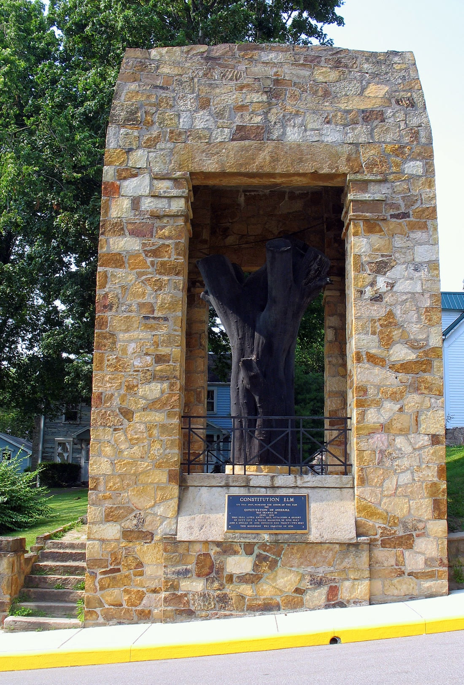

Corydon, Harrison County
Constitution Elm in Corydon

The Constitution Elm is the trunk of the tree that shaded Indiana's first constitutional convention. In June 1816, 43 delegates met in Corydon and did much of the drafting under a large elm. The Indiana State Museum's page for the Corydon Capitol says that trunk is still standing. It stands on West High Street, inside a sandstone shelter, in Harrison County.
- Place
- West High Street, Corydon, Indiana 47112. Pin 38.21352, -86.12738. The stump is outdoors. The capitol tours are a separate stop at 202 E. Walnut Street, on the town square.
- June 1816
- Forty-three delegates. The capitol was not finished, and the log territorial building was too hot, so the session moved under the elm. The DAR dates the framing from 10 to 29 June 1816.
- The living tree
- About 50 feet tall. The 2012 museum post says the crown stretched over 130 feet. The DAR record says a five-foot trunk and a 132-foot spread.
- What remains
- Dutch elm disease killed the tree in 1925. The branches were cut, the trunk was kept, and a sandstone shelter went up around it in 1936.
Shade for a constitution
Corydon was the capital of the new state before Indianapolis. The square Federal capitol, built from 1814 to 1816, uses limestone hauled from nearby quarries. The walls are 40 feet square. Logs from the virgin forest carry the ceiling and the roof. In June 1816 that building was not ready for the convention, and the log cabin that had served as a territorial meeting house grew too hot. Laura Von Fossen, writing for the Indiana State Museum on 7 November 2012, describes the 43 delegates taking the work outside, under an elm whose crown stretched over 130 feet and whose height was 50 feet.
The Indiana Daughters of the American Revolution record the same height, a trunk five feet through, and a branch spread of 132 feet. A stone and bronze tablet placed under the living tree on 7 September 1915, by the Hoosier Elm Chapter, marks the framing of the constitution from 10 to 29 June 1816, on West High Street.
The museum's capitol page carries the political calendar that followed the shade. The first state election was 5 August 1816, and Jonathan Jennings was elected governor. In November 1816 the first General Assembly met in the new capitol: 29 representatives, 10 senators, and the lieutenant governor. On 11 December 1816 Indiana entered the Union as the 19th state. Corydon stayed the capital until the government moved to Indianapolis in 1825.
After the move, the 1816 capitol became the Harrison County Courthouse. The present courthouse was finished in 1929. The old capitol was restored and opened as a state memorial in 1930. The Governor's Mansion, a brick house of 1817, was home and office to William Hendricks, Indiana's third governor from 1822 to 1825. The museum counts it among nine original buildings from the capital years, with the First State Office Building, Cedar Glade, Posey House, Westfall House, Branham Tavern, Adams-Payne House, and Harvey Heth House.
The trunk, the sandstone, and the souvenirs
Dutch elm disease took the Constitution Elm in 1925. Attempts to save it failed. The branches were trimmed and the trunk was kept. Wood from the tree, down to the shavings, was saved for souvenirs. The 1816 constitution on display in the Indiana Statehouse in Indianapolis sits in a case made from that wood. The remaining trunk was set in a large sandstone monument.
In 1936 the Hoosier Elm Chapter of the DAR erected a sandstone shelterhouse around the trunk on West High Street. A bronze tablet is set in the stone front, marking the site of the June 1816 framing. The chapter cared for the shrine and later gave it to the State of Indiana. A photograph made on 3 July 2006 shows the dark trunk inside that sandstone opening, with a plaque on the front of the shelter and a rail across the base. The museum's current capitol page still names the trunk as standing.
In 2012, with the state bicentennial four years off, museum conservators visited the elm, photographed the top of the monument, and took samples of the dead wood. They were asking how to keep a tree that is already dead, and they were talking with people who preserve totem poles. The trunk a visitor sees is the one in the 1936 sandstone shelter, on West High Street.
Seeing the stump and the capitol
The stump is an outdoor stop. The pin for Constitution Elm is on West High Street in Corydon, Harrison County, 47112. You do not buy a ticket to look at the shelter from the sidewalk. The Corydon Capitol State Historic Site is the indoor half of the same story, on the town square at 202 E. Walnut Street. From Interstate 64, go south on State Road 135, then take State Road 62, the Ohio River Scenic Byway, about 1.2 miles to State Road 337. Parking is on the historic downtown square, and more parking is at the Harrison County Convention and Visitors Bureau.
Timed indoor tours run Wednesday through Sunday at 10 a.m., noon, 2 p.m., and 4 p.m. Call (812) 738-4890 before you buy a ticket, to confirm a tour is on. Walk-up tickets depend on space. Members and children younger than 3 are free. Adults 18 to 59 pay $9, seniors 60 and older pay $8, youth 3 to 17 pay $6, and college students with a valid ID pay $5. Easter, Memorial Day, Labor Day, Thanksgiving, Christmas Eve, Christmas Day, and New Year's Eve are closed. Independence Day is open. New Year's Day is limited to preregistered tours. Admission is free on Martin Luther King Jr. Day, Presidents Day, and Juneteenth.
Other Indiana figures on this site sit far from this square. The Vincennes riverwalk is the Wabash walk in the older territorial town. Rosie the Riveter is the Clarksville bronze. Larry Bird's childhood home is in French Lick, and Otis is the fishing sasquatch at the cabins there. The full list is the Indiana directory.
Last verified . Open the pin.
Questions
Why is the stump in Corydon?
In June 1816, 43 delegates drafted Indiana's first constitution under a large elm in Corydon. The capitol was unfinished and the log meeting house was too hot, so the work moved into the shade. The trunk still stands and is called the Constitution Elm.
How large was the tree, and what protects the trunk?
A 2012 museum post gives a spread of over 130 feet and a height of 50 feet. The Indiana DAR record gives fifty feet, a five-foot trunk, and a 132-foot spread. In 1936 the Hoosier Elm Chapter built a sandstone shelter around the trunk on West High Street, with a bronze tablet in the stone front. The shrine was later given to the State of Indiana.
Sources
- Indiana State Museum, Corydon Capitol. The June 1816 convention, the standing trunk, Jennings, the first assembly, statehood on 11 December 1816, and the move to Indianapolis in 1825.
- Plan your visit. Tours, admission, the square, and 202 E. Walnut Street. Call (812) 738-4890 to confirm a tour.
- Preserving the Constitution Elm. Laura Von Fossen, 7 November 2012. The heat, the size, the 1925 disease, the souvenirs, and the sandstone monument.
- Indiana DAR historic markers. The 7 September 1915 tablet, and the 1936 sandstone shelter by the Hoosier Elm Chapter.
- Constitution Elm photograph. FTSKfan, 3 July 2006, public domain.

Link to https://testedprofit.com/IN/Constitution%20Elm%20Stump/.